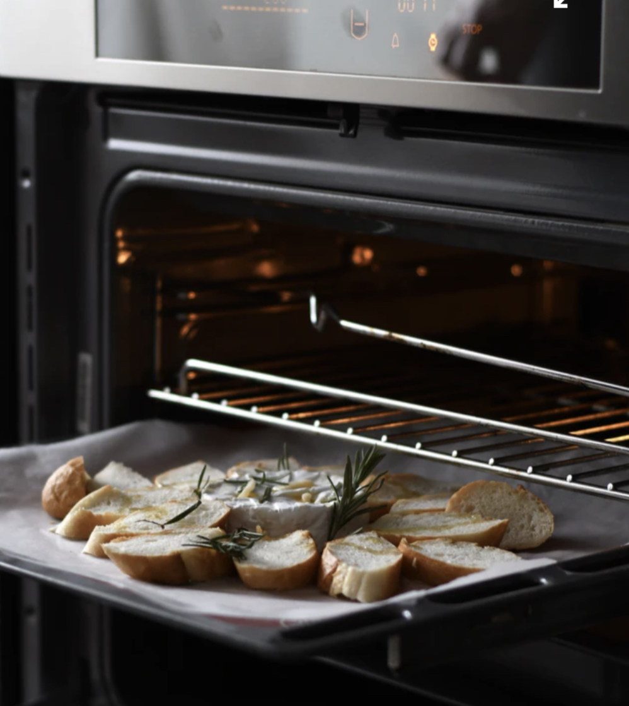
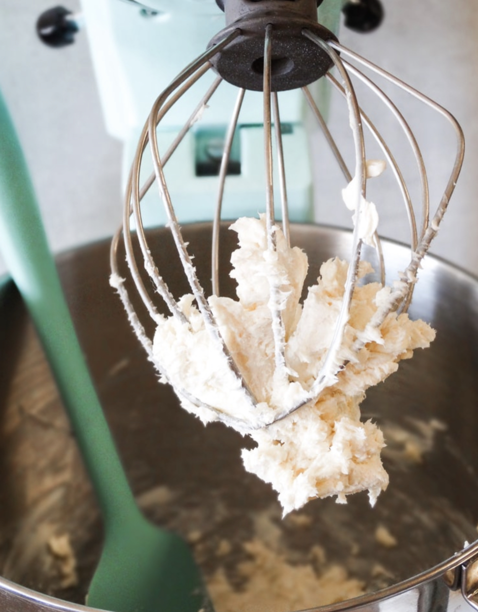

At room temperature, eggs and dairy ingredients trap air inside of them, and bond together easily. During baking, the air expands (thermal expansion) creating fluffy, airy goods with light and even texture. Cold ingredients, however, do not bond so easily, and keeps much less air pockets – resulting in clumpy, dense and flat results.
For room temperature, take the butter out of the fridge an hour before starting to cook.
Room temperature eggs can be made by placing eggs in a bowl of warm water for 10-15 minutes. Do not using boiling hot water – doing so will cook the eggs and render them unusable.
For dairy ingredients to become room temperature, you will need to take them out of the fridge an hour before beginning your recipe.
Sometimes, when you read a baking recipe, the author specifies the rack position to put your food in – but why is it necessary? Well, the explanation has a bit of science and engineering in it: ovens usually have a heat source at the bottom and top, and since hot air rises, the top of the oven is consistently hotter. On the other hand, the lower heating element heats up in quick, intense bursts, working to maintain the oven’s internal temperature. Because of the difference in temperature and intensity inside an oven, you will need to keep the rack placement of foods in mind if you want the best results.
The top rack, often the hottest, is reserved for broiling foods that you want to char or crisp quickly: Garlic bread, casseroles, and just about anything else covered in melted cheese. Foods on the top rack should be supervised, as it is very easy for them to burn when broiling.
The middle rack is good for even cooking, and thus most foods. The middle of the oven allows for hot air to circulate evenly around the food, cooking and baking food evenly without risk of burning.
The bottom rack is close to the lower heat source, and so foods are exposed to short and super-hot temperatures – browning their undersides. The bottom rack is perfect for pizza, flatbreads, pie crusts, and roasted vegetables that you want nicely browned.
To summarize, the top rack is used for broiling and foods covered with cheese, the middle is the most dependable and used for any foods requiring even cooking, and the bottom is used for browning foods with short and intense temperatures. For cooking with several baking sheets, you will need to switch racks depending on your food’s cooking needs – if you are baking pizza with a crisp crust and browned top, start cooking on the bottom rack for heating up the crust, then move it to the top rack to broil the cheese.
Baking can be difficult in many ways, and one of the most common mistakes people make is overmixing batter, often to ensure that everything is smoothly combined. You see, how long you mix your batter for will either make or break your baked goods.
When you overmix dough, it can end up too airy and can result in extra gluten development – creating gummy, chewy baked goods. Excessively mixing cakes can make the end result very dense and weak, as the extra air incorporated into the mixture weakens the cake’s structures, making it fragile and prone to collapsing.
You can avoid overmixing by minimizing the amount of time you spend mixing. As soon as the mix becomes uniform – that is, when all the ingredients become incorporated and no streaks of flour remain – stop mixing. If you plan to add toppings towards the end, stop mixing once most of the streaks are gone. These final streaks will end up being incorporated into the batter once you mix in the add-ins.
Return to the top of the page.